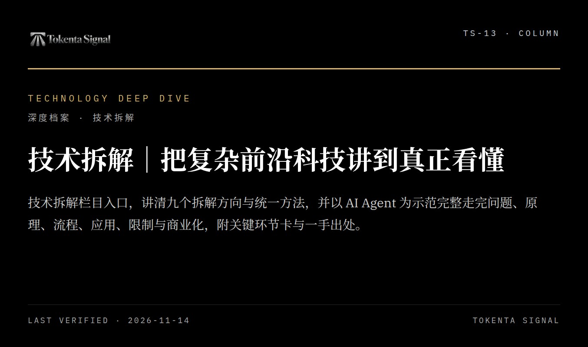
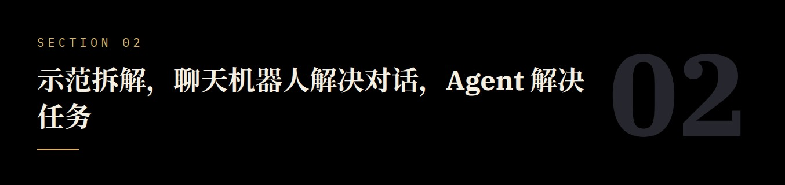
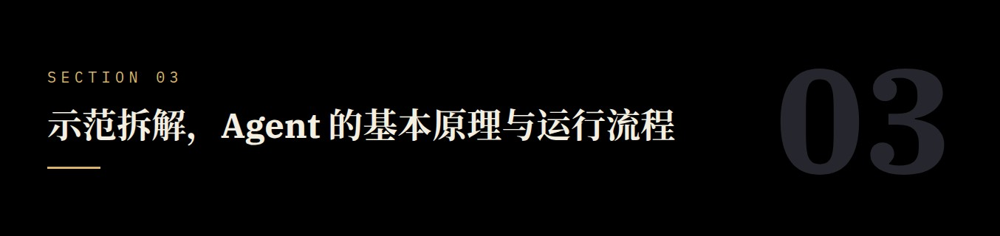
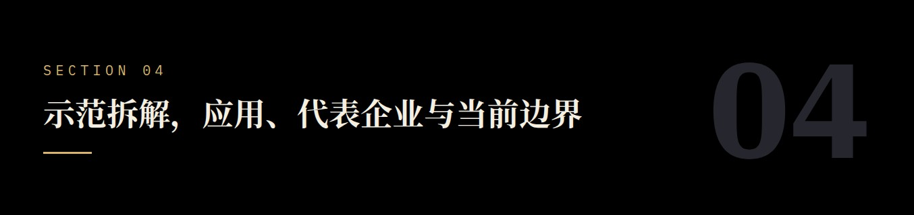

前沿技术发布时，信息通常有两种极端。一种只有结论和口号，读完不知道它到底解决了什么问题。另一种直接堆论文术语和参数，普通读者很难判断这项技术离实际应用还有多远。技术拆解栏目处理中间地带，把一项技术放回它要解决的问题里，讲清原理、流程和边界。
本栏目每篇回答八个问题。技术要解决什么问题，之前的办法卡在哪里，新办法的基本原理是什么，运行流程分几步，已经用在哪里，代表实现有哪些，当前限制是什么，商业化走到哪一步。判断只写有出处的部分，论文、官方工程文档和官方产品文档优先，媒体报道只作背景补充。
第一个方向是大模型基础设施，指支撑模型训练和推理的集群、调度与服务系统，重点看算力如何被组织起来。第二个方向是 Reasoning Models，中文通常称推理模型，指模型先展开较长的内部思考过程再给出答案，重点看准确率提升付出了多少时延与成本。第三个方向是 AI Agents，中文称智能体，指模型能调用工具并按反馈推进任务的系统，本篇示范拆解专门讲这一类。第四个方向是 Multimodal AI，多模态指模型同时处理文本、图像、音频等不同类型信息，重点看不同信息如何对齐。
第五个方向是 Robotics，机器人方向重点看感知、决策与执行如何形成闭环。第六个方向是 AI Chips，重点看显存、带宽与芯片间互连如何决定训练和推理的上限。第七个方向是 Autonomous Systems，自主系统指能在少有人干预下持续运行并处理异常的系统，重点看安全边界。第八个方向是实际技术应用，只收录已经上线或有公开实测记录的案例。第九个方向是技术商业化路径，追踪一项技术从论文和演示走到付费产品时，成本结构与收费方式发生了什么变化。

先看要解决的问题。许多真实工作包含连续步骤，查资料、读文件、操作系统、核对结果，中间还要根据新信息改计划。普通聊天机器人以一轮对话为单位，用户问一句，模型答一句，答案停留在文字层。它无法自己去查最新数据，也不会在执行失败后换一条路继续推进。任务一旦跨过三五步，拆解、催办和验收的活全部回到人身上。
之前的解决方式主要有两类。一类是固定流程自动化，工程师提前把每一步和分支写死，稳定可控，遇到流程外的情况就停住，规则越堆越多，维护成本随之上升。另一类是给聊天模型外挂搜索和插件，模型能拿到一点外部信息，行动仍由人逐项确认，整体还是对话助手。两类办法的共同限制在于，决策与执行是分开的，系统缺少一个能根据执行结果持续调整的中间层。

Agent 的基本结构在两家头部厂商的官方文档里口径接近。OpenAI 的实践指南把 Agent 拆成三个部件，负责推理与决策的模型、供模型调用的外部工具、规定行为边界的指令。Anthropic 的工程文章进一步区分工作流与 Agent，工作流按预先写好的代码路径编排模型与工具，Agent 则由模型动态决定自己的流程和工具用法。ReAct 论文给出了这套循环的早期完整形态，模型交替生成推理痕迹与行动，再把外部环境的返回结果作为观察读回来，推理帮助模型更新计划，行动帮助模型拿到新信息。
把运行流程按步写开，一共六步。第一步，系统接收目标与指令，指令里写清任务范围、可用工具与禁止事项。第二步，模型做初步规划，判断先查什么、先调用哪个工具。第三步，模型发出工具调用，工具在受控环境里执行，沙箱指与生产环境隔离的运行空间，代码和命令先在沙箱里跑，避免直接影响真实系统。第四步，工具把执行结果返回给模型，这份结果就是 Anthropic 所说的来自环境的真实反馈，模型据此判断进度。第五步，模型评估结果，成功则进入下一步，失败则修正计划或换工具重试。第六步，达到完成条件、触发停止条件或遇到需要人判断的节点时，循环结束或暂停等待人工确认。护栏是贯穿全程的一层检查，用来限制数据与操作的风险边界。
推理与规划循环
环节 推理与规划循环
要解决的问题 任务步骤无法提前写全，计划需要随执行结果不断修正
现有做法 ReAct 范式让模型交替输出推理、行动与观察，推理负责跟踪和更新计划，行动负责从外部环境取回新信息
限制 循环轮次越多，错误越容易累积，成本与时延也随之上升，需要设置最大轮次等停止条件
代表实现 ReAct 论文在 HotpotQA、Fever、ALFWorld 与 WebShop 四类任务上验证，交互决策任务的成功率高于当时的模仿学习与强化学习基线
范式与实验结论来自 ReAct 原论文，arXiv 2210.03629，ICLR 2023 发表。
工具调用与环境反馈
环节 工具调用与环境反馈
要解决的问题 模型本身只能生成文字，无法查数据库、读文件或改动外部系统状态
现有做法 工具按用途分为三类，取数据的工具、执行动作的工具，以及把另一个 Agent 当作工具来调用的编排类工具，每件工具都要有标准化定义
限制 工具数量增加后，模型容易选错功能相近的工具，官方建议先把单个 Agent 的工具做清楚，再考虑拆成多个 Agent
代表实现 OpenAI Agents SDK 以模型、工具、指令三部件组织 Agent，并以循环方式运行到触发退出条件为止
三部件结构、工具分类与循环运行口径来自 OpenAI 官方实践指南。
沙箱执行与凭证隔离
环节 沙箱执行与凭证隔离
要解决的问题 Agent 要执行命令和读写文件，凭证与会话历史放在服务商一侧，受监管企业难以接受
现有做法 自托管方案把编排、沙箱、凭证与会话历史留在客户自己的基础设施，客户自运智能体服务器、PostgreSQL 16 以上数据库与沙箱工作进程，模型调用仍发给客户选定的外部提供方
限制 自托管版目前只开放私测。功能边界以 Anthropic 官方文档为准，托管版提供 cron 定时部署，dreaming 记忆整理属 research preview，自托管版的可用范围按官方文档逐项确认，定价与全面上线时间未公布
代表实现 Anthropic 自托管 Claude Managed Agents，2026 年 11 月 12 日开放私测
架构组成据 Anthropic 官方文档（自托管与总览页）与本公众号 Issue 223 已核验素材。
工具供给与接口开放
环节 工具供给与接口开放
要解决的问题 开发者做应用时，大量时间花在把搜索、文件解析、语音等零散能力逐个接入与维护上
现有做法 把成熟产品内部的工具整套开放为 API，内置工具随模型调用直接启用，搜索、抓取、OCR 与语音等能力也可单独按次购买
限制 面向公众提供服务时，内容审核、模型备案与 AI 标识等合规义务由接入的开发者自行承担，安全检查的准确性直接影响服务稳定性
代表实现 DeepSeek 于 2026 年 11 月 13 日开放整套应用 API，含网页搜索、链接读取、文件输入与模型安全检查
工具清单与责任划分来自 DeepSeek 官方新闻页《DeepSeek 发布全家桶应用 API》，并经本公众号 Issue 230 核验。
验证与评测闭环
环节 验证与评测闭环
要解决的问题 Agent 产出的结果对不对，不能只靠模型自评，需要外部可核验的判定机制
现有做法 把任务改写成可机器核验的形式，人负责写清要证明什么，Agent 负责生成证明，再由独立的证明检查器逐条核验
限制 可信度最终取决于人写的规范是否正确，规范规模同样可观，适用范围目前限于能形式化的任务
代表实现 DeepMind 的 AlphaProof Code 用智能体在四周内写出超过 600 万行 Lean 证明，验证 Signal 协议编译代码的安全性质，人类负责撰写形式化规范，智能体负责生成证明
行数与分工来自 DeepMind 官方博客，并经本公众号 Issue 208 核验，验证范围只覆盖指定版本的编译代码。
上下文包管理与安全默认
环节 上下文包管理与安全默认
要解决的问题 技能、提示词与工具配置散落在各个工具里，版本不一致，装入恶意内容时缺少拦截
现有做法 用一份清单文件统一声明全部依赖，锁定文件钉住精确版本与内容哈希，安装前扫描隐藏字符与提示词注入，治理策略默认拒绝
限制 目前的自动更新只覆盖版本更新，不含安全更新，生态仍在早期，支持的工具清单还在扩展
代表实现 微软 APM 智能体包管理器，MIT 协议开源，2026 年 11 月 3 日起获 GitHub Dependabot 的版本更新支持
清单、锁定与默认拒绝口径来自微软 APM 官方站点，并经本公众号 Issue 191 核验。

已经落地的应用集中在两类场景。客服场景里，Agent 一边对话一边调用工具查订单、读知识库、办理退款或转接工单，成败可以用问题是否解决来衡量，Anthropic 在其工程文章的附录里把客服列为最成熟的应用之一，并提到已有企业按成功解决的问题数量收费。编程场景里，Agent 直接在代码仓库里读文件、改多处代码、跑测试并根据报错继续修，Anthropic 自家的编程 Agent 用来处理 SWE-bench 这类真实仓库任务。研究与检索场景也在成形，多轮搜索加评估反馈的组合，适合需要跨多个来源核对信息的任务。
当前限制同样明确。错误会沿着循环累积，一步判断失误可能带偏后续全部步骤，官方建议是在沙箱环境里充分测试并配好护栏。成本与时延高于单次问答，任务越长越明显。工具一多就容易选错，指令写得含糊时尤其明显。权限边界是另一类限制。Agent 能调用的工具越多，影响范围越大，删除数据、对外发送与付款这类不可逆动作，成熟实现通常要求人工批准后才执行，自动化停在哪一步，直接决定系统能用在什么场景，这也是企业部署时最先审查的部分。商业化前景取决于可靠性何时跨过企业敢放手的门槛，目前能看到的收费形态有三种，按成功结果收费的客服 Agent、按调用量收费的工具 API，以及把编排与凭证留在客户侧的自托管部署。Tokenta Signal 判断，Agent 的竞争焦点正在从模型本身转向工具质量、验证机制与运行治理，谁先把失败率压到可审计的水平，谁先拿到企业预算。
01 读一篇拆解时先看问题与旧办法两节，判断这项技术出现的理由是否成立，再看原理与流程。
02 卡片按环节拆开，适合收藏后按需查阅，单个环节的代表实现都附了官方出处，可直接点开原文核对。
03 遇到只讲效果不讲限制的外部报道，可用本篇八个问题逐项对照，缺了哪一项，结论的可信度就打折到哪一项。
04 本栏目只采用论文与官方文档可核验的说法，示范拆解中标注了私测、未公布与范围限定的内容，引用时请连同这些限定一起引用。

SOURCES · 来源与核验
[1] Anthropic 官方工程文章 Building Effective Agents，工作流与 Agent 的区分、增强型大模型与 Agent 循环
[2] OpenAI 官方实践指南 A Practical Guide to Building AI Agents，模型、工具、指令三部件与护栏
[3] ReAct 原论文，Synergizing Reasoning and Acting in Language Models，arXiv 2210.03629
[4] Anthropic 官方发布 Introducing the Model Context Protocol，工具与数据源的开放连接标准
[5] Google DeepMind 官方博客 Introducing AlphaProof Code，智能体生成证明与人类规范的分工
[6] DeepSeek 官方新闻页，《DeepSeek 发布全家桶应用 API》，2026-11-13
[7] Microsoft APM 官方站点，智能体包管理器与默认拒绝的安全模型
[8] Anthropic 官方文档，Managed Agents 自托管与产品总览，自托管架构与功能边界
LAST VERIFIED · 2026-11-14
TOKENTA SIGNAL
Extracting signals from the noise. 本栏目内容来自公开来源并标注核验日期，不构成任何投资建议。
signal.tokenta.space · team@tokenta.space